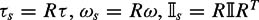

|
| |||||||||||||
|
|
||
Until now, we have been using freely the concepts of "center of mass" and "inertia about an axis" to get to the use of Lagrange's equations as quickly as possible. We now provide formal definitions of these quantities and apply them to the dynamics of a translating and rotating rigid body.
Let be a rigid body occupying a volume  , r be a vector from the origin to a point in , and ρ(r) be the mass density of
, r be a vector from the origin to a point in , and ρ(r) be the mass density of  as a function of the location r. Then the mass of is the volume integral of the mass density
as a function of the location r. Then the mass of is the volume integral of the mass density
and the center of mass is the weighted average of the mass density
When a body moves freely in space, it is convenient to describe the translational position of the body by the Cartesian coordinates q of the center of mass relative to a stationary inertial frame. The translational kinetic energy of the body can be written . Applying Lagrange's equations yields the familiar equation
| (10.29) |
|
where f is the linear force applied to the body expressed in the inertial frame.
When a body moves in a plane, a single configuration variable q can be used to describe its orientation. Such motion occurs, for example, when the body rotates about a fixed axis, or when the body slides freely on a frictionless plane. In the former case, it is convenient to to define a stationary x-y-z inertial frame with the z-axis along the axis of rotation. In the latter case, it will be convenient to define an x-y-z inertial frame at the center of mass of the body, with the z-axis orthogonal to the plane of motion. (Since we are focusing on rotational motion only, the center of mass can be assumed stationary.)
The kinetic energy of a body rotating in the plane is the integral over the body of the differential kinetic energy at each point r = (x, y, z)T:
where q is the angle of the body,  is the angular velocity, and is the linear velocity at r. Therefore we can write the kinetic energy in the form of equation (10.13),
is the angular velocity, and is the linear velocity at r. Therefore we can write the kinetic energy in the form of equation (10.13),
where
is the inertia of the body about the z-axis. If the body is uniform density, equation (10.31) simplifies to
where m is the mass of the body. Applying Lagrange's equations to equation (10.30), we get
| (10.32) |
|
where τz is the torque about the z-axis.
If we choose a z-axis through the center of mass of the body and a parallel z′-axis a distance d away, then the scalar inertias Izz and Iz′z′ are related by the parallel-axis theorem for planar rotation:
| (10.33) |
|
The proof of this theorem is straightforward and in fact is implicit in our derivation of the equations of motion of the RP arm.
This section requires extra mathematical machinery, and can be safely skipped if the reader is not interested in the dynamics of a rotating spatial body.
In our Lagrangian formulation, we first choose a set of coordinates q,express the Lagrangian in terms of q and , and derive the equations of motion. To do this for a rotating spatial body, we can choose q to be three angles describing the orientation of the body in a world frame. Then we can express the kinetic energy of the body as a function of q and  and proceed as before. If we do this, however, the inertia matrix M(q) will be extremely complex for any choice of q, providing little insight into the nature of the motion. The equations of motion are rarely written this way. Another problem is that no choice of three orientation variables can provide a smooth, global coordinatization of the space of orientations. In the same way that latitude and longitude coordinates for the Earth "go bad" at the poles, where the longitude changes discontinuously, any choice of three coordinates to represent orientations will have singularities. (For motions away from these bad orientations, however, three coordinates work just fine, so this is not the most serious problem. In fact, we have a similar problem representing a single angle by a real number, which requires the use of mod2π arithmetic.)
and proceed as before. If we do this, however, the inertia matrix M(q) will be extremely complex for any choice of q, providing little insight into the nature of the motion. The equations of motion are rarely written this way. Another problem is that no choice of three orientation variables can provide a smooth, global coordinatization of the space of orientations. In the same way that latitude and longitude coordinates for the Earth "go bad" at the poles, where the longitude changes discontinuously, any choice of three coordinates to represent orientations will have singularities. (For motions away from these bad orientations, however, three coordinates work just fine, so this is not the most serious problem. In fact, we have a similar problem representing a single angle by a real number, which requires the use of mod2π arithmetic.)
So we will not begin by choosing angular coordinates, and instead of defining the angular velocity as the time-derivative of coordinates, we define ωs = [ωxs, ωys, ωzs]J to be the angular velocity of the body about the xs-ys-zs axes of a stationary inertial frame at the center of mass of the body. The linear velocity at a point rs = (xs, ys, zs)T on the body is ωs × rs. The total kinetic energy of the body can be written
which can be simplified to
| (10.35) |
|
or
| (10.36) |
|
The matrix is the symmetric positive definite inertia matrix for the body written in the inertial frame. Because is defined in the stationary world frame, it changes as the body rotates.
The angular momentum of the body is , and the torque τs = [τxs, τys, τzs]T acting on the body, expressed in the inertial frame, is the rate of change of P:
The density of the body is not changing as it rotates, so the change of , is due only to the motion of the body in the world frame, giving . Plugging in, we get
This is known as Euler's equation in the inertial frame.
To turn equation (10.37) into a matrix equation, we define the skew-symmetric matrix representation of the vector ωs = [ωxs, ωys, ωzs]T:
We can now express equation (10.37) as the matrix equation
We still do not have a representation of the orientation of the body in the world frame, however. We need an equation for the evolution of the body's orientation (the kinematic equation) to go with equation (10.38) for the evolution of the velocity (the dynamic equation).
To do this, define a frame x-y-z attached to the body at its center of mass. As described in Chapter 3, our representation of the orientation of the body will be as a 3 × 3 rotation matrix
where is the unit vector in the body x-direction expressed in the inertial coordinate frame. The vectors  and are defined similarly (figure 10.4).
and are defined similarly (figure 10.4).
Each column vector of R moves according to the angular velocity ωs,so the kinematics of the rotating rigid body can be written
Together, equations (10.39) and (10.38) describe the motion of a rotating rigid body in a spatial frame. The use of the rotation matrix representation of the orientation allows us to write the kinematics in a simple and globally correct fashion, which is not possible with any choice of three coordinates.[1]
One difficulty with the equations of motion in an inertial frame is that changes as the body rotates. It would be more convenient and intuitive to define the equations of motion in a frame fixed to the body, where a body inertia matrix is unchanging. To do so, we use the coordinate frame x-y-z attached to the body at its center of mass. The angular velocity in this frame is written ω = [ωx, ωy, ωz]T and the external torque is written τ = [τx, τy, τz]T. These are related to ωs and τs by the following equations:
The inertial frame coordinates rs = [xs, ys, zs]T of a point are related to its coordinates in the body frame r = [x, y, z]T by
The kinematic equations in the two frames are related by
Plugging these relations into equation (10.34) and simplifying, we find
| (10.40) |
|
| (10.41) |
|
where the symmetric positive definite body-fixed inertia matrix is given by
The (possibly non-unique) eigenvectors of define orthogonal principal axes of inertia of the body. If the body x-y-z frame is chosen so that the axes are aligned with principal axes of inertia, then all off-diagonal terms of are zero, and Ixx, Iyy, Izz are the principal moments of inertia. In the general case, one principal axis is the axis of maximum inertia, one principal axis is the axis of minimum inertia, and the third principal axis (the intermediate axis of inertia) is orthogonal. Because of symmetries, however, the inertia about two or three of the principal axes might be identical. Often the principal axes of inertia of a body are evident from symmetries (figure 10.5).
To derive the dynamics in the body frame, we cannot simply take the time-derivative of , since this is not defined in an inertial frame. (The time-derivative of the momentum is a generalized force, while the time-derivative of is not.) Instead, we begin with equation (10.38),
and plug in , and to get
Recognizing from our identities that , and premultiplying both sides by R−1 = RT, we get
Plugging in and noticing that RT R is the identity matrix, this simplifies to
This is Euler's equation in the body frame. Note that it has the same form as Euler's equation in the spatial frame. Collecting together the kinematics and dynamics in one place, the equations of motion in the body frame are written
| (10.43) |
|
The big advantage of this form over the spatial equations is that is constant.
If the body x-y-z frame is aligned with the principal axes, making all off-diagonal terms of zero, equation (10.44) simplifies to
One key implication of equations (10.44) and (10.45) is that may not be zero even if τ is zero. Although the angular momentum and kinetic energy of a rotating body are constant when no external torques are applied, the angular velocity of the body may not be constant. For further interpretation of equation (10.45), see the mechanics textbooks by Symon [407] and Marsden and Ratiu [308] or the robotic manipulation textbook by Mason [312].
When it is difficult to solve the integrals of equation (10.42) directly to find II, it may be possible to split the body into simpler components and solve for (or look up in a table) the inertia matrix at the center of mass of each component separately. If we then transform these inertia matrices to a common frame, we can simply add them to get the inertia matrix for the composite body in that common frame. This transformation can be accomplished by a translation followed by a rotation, as outlined below (see figure 10.6).
Let be the inertia matrix of the ith component, expressed in its own local coordinate frame xi-yi-zi at its center of mass. Let ri be the vector from the origin of the local frame to the origin of the common frame x-y-z,expressed in the local frame. The inertia IIi can be expressed in a frame aligned with xi-yi-zi, but located at the origin of the common frame, using the parallel-axis theorem
where mi is the mass of the ith component and is the 3 × 3 identity matrix. Now let Ri denote the rotation matrix describing the orientation of this translated local frame relative to the common frame. Rotating the inertia matrix into the common frame, we get
The matrix is the inertia of the ith component expressed in the common frame. Performing this translation and rotation for all k components of the body, the total inertia of the body in the common frame is .
We have gone to great lengths to avoid choosing three generalized coordinates and using Lagrange's equations! Now that we have done this work and developed some understanding of the body inertia matrix II, it will be easier to see how Lagrange's equations could be applied.
Figure 10.7 shows a choice of coordinates q = [q1, q2, q3]T due to Euler. The body x-y plane intersects the spatial xs-ys plane along a line called the line of nodes. The coordinate q1 is the angle from the xs-axis to the line of nodes, q2 is the angle from the line of nodes to the body x-axis, and q3 is the angle from the zs-axis to the body z-axis. With some work, the angular velocity ω = [ωx, ωy, ωz]T can be expressed in terms of these coordinates:
Plugging these into the kinetic energy , we get the kinetic energy in the form , as we are used to. From there we can apply Lagrange's equations as before to get the dynamic equations of motion for generalized torques acting along the coordinates.
A good thing about this formulation is that we have used the fewest possible numbers to represent the orientation, and the kinematics are trivial. Significant drawbacks are the complexity of the equations, as well as the singularities in the coordinate representation.
Represent the configuration of a point mass in a plane by polar coordinates q = [r, θ]T and use Lagrange's equations to find the equations of motion. Then write the inertia matrix M(q), derive the Christoffel symbols, and show that the dynamics of equation (10.10) are equivalent to the equations you derived using the Lagrangian method.
Use Lagrange's equations to derive the equations of motion of a 2R (two revolute joints) robot arm operating in a vertical plane. The first link has length L1, mass m1, and inertia I1 about the center of mass, and the center of mass is a distance r1 from the first joint. For the second link, m2, I2, and r2 are defined similarly (figure 10.8). Put the equations of motion in the standard form of equation (10.7).
Find the eight Christoffel symbols for the mass matrix of problem 2.
Use Lagrange's equations to find the equations of motion of a PR robot arm. Provide your own drawing and parameters and solve with these parameters. Put the equations in the standard form of equation (10.7).
Find the inertia matrix of a round tube of length L, inner diameter d1, outer diameter d2, and density ρ. Choose a frame aligned with the principal axes of inertia. Remember that inertia matrices in a common frame can be added and subtracted.
The inertia matrix of a body in a coordinate frame x1-y1-z1 at the center of mass of the body is . The orientation of this coordinate frame is R1 relative to a frame x-y-z. The origin of x-y-z is at r1 in the frame x1-y1-z1. Transform the inertia matrix to an inertia matrix expressed in the x-y-z frame, where
Also provide a drawing of the two frames showing their position and orientation relative to each other.
Consider a barbell constructed of two spheres of radius 10 cm welded to the ends of a right circular cylinder bar of length 20 cm and radius 2 cm. Each body is a solid volume constructed of steel, with a mass density of 7850 kg/m3. Find the approximate inertia matrix in a principal-axis frame at the center of mass.
Prove the parallel-axis theorem [equation (10.46)].
Derive equations (10.47), (10.48), and (10.49).
Write a program to simulate the tumbling motion of a rigid body in space.
A point of mass m moves in three-dimensional space , actuated by three orthogonal thrusters, with equations of motion (no gravity). Now imagine that the mass (still with three thrusters) is constrained to move on a sphere of radius 1 centered at the origin of the inertial frame. Write the Pfaffian constraint and solve for and the Lagrange multiplier λ.
Find the projection matrix P for problem 11 and write the constrained equations of motion in the form of equation (10.20).
In problem 11, it is possible to reduce the number of generalized coordinates from three to two and eliminate the Lagrange multiplier. Choose latitude (q1) and longitude (q2) coordinates to describe the position of the point on the sphere, and use Lagrange's equations to solve for the dynamics in these coordinates. Explain what the generalized forces are. Give the Christoffel symbols in these coordinates.
[1]A globally correct representation of orientation can be achieved using only four numbers with quaternions (see appendix E). We use the matrix representation because it allows the convenient use of matrix multiplications.
|
|
||
|